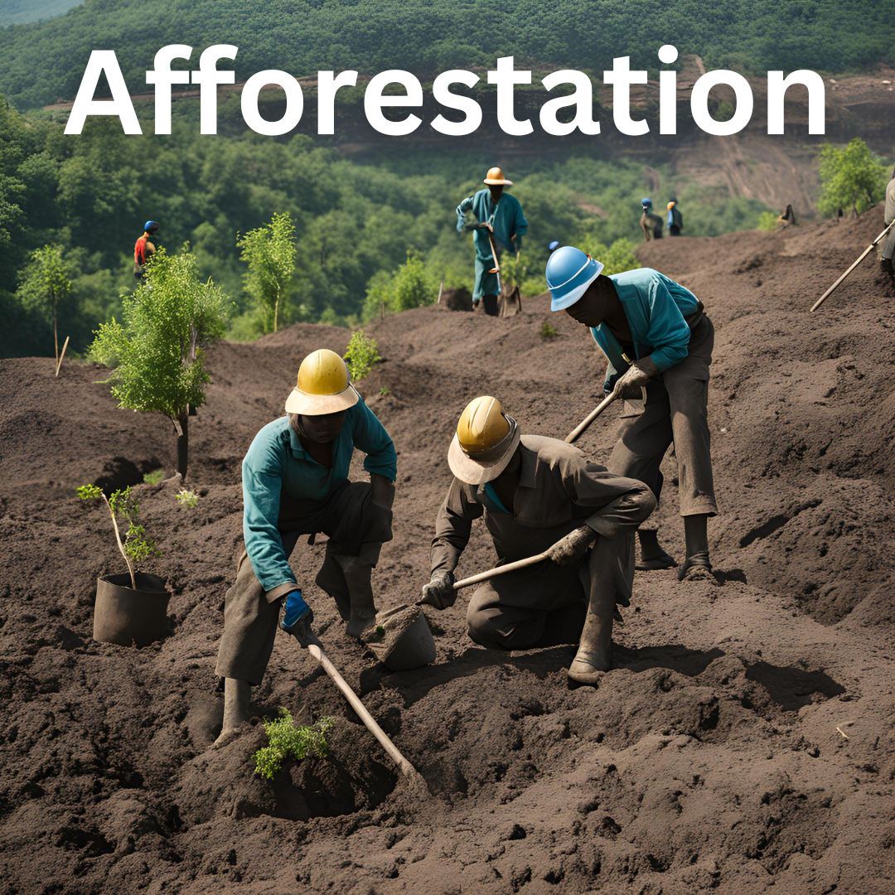

Take the first step towards carbon neutrality today! Our innovative platform is designed to help coal mines across India reduce their carbon footprint, optimize operations, and achieve sustainable energy goals. Whether you're looking to estimate emissions, explore clean technologies, or develop a comprehensive pathway to carbon neutrality, we've got you covered.
Get Started NowOverview: Discover how Jayant Mine, one of India’s largest coal mining operations, reduced its carbon emissions by 30% using our platform. The mine adopted our comprehensive carbon management tools to monitor, reduce, and offset emissions.
Faced with high emissions from transportation and mining equipment, [Coal Mine Name] needed a solution to measure their carbon footprint and offer practical pathways for reduction. They sought cleaner energy sources, optimized operations, and aimed for productivity without compromising sustainability.
By utilizing our platform, the mine was able to:
Want to know how your operation can achieve similar results? Explore our platform today and start your journey towards carbon neutrality.
Learn MoreDiscover the importance of carbon neutrality and how your coal mining operations can make a significant environmental impact.
Accurately calculate your mine’s carbon emissions by analyzing key activities like excavation, transportation, and equipment usage.
Explore strategies such as renewable energy adoption, methane capture, and carbon credits to achieve carbon neutrality.